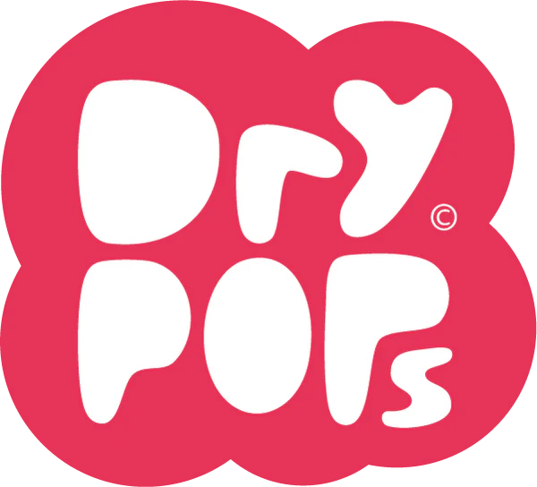
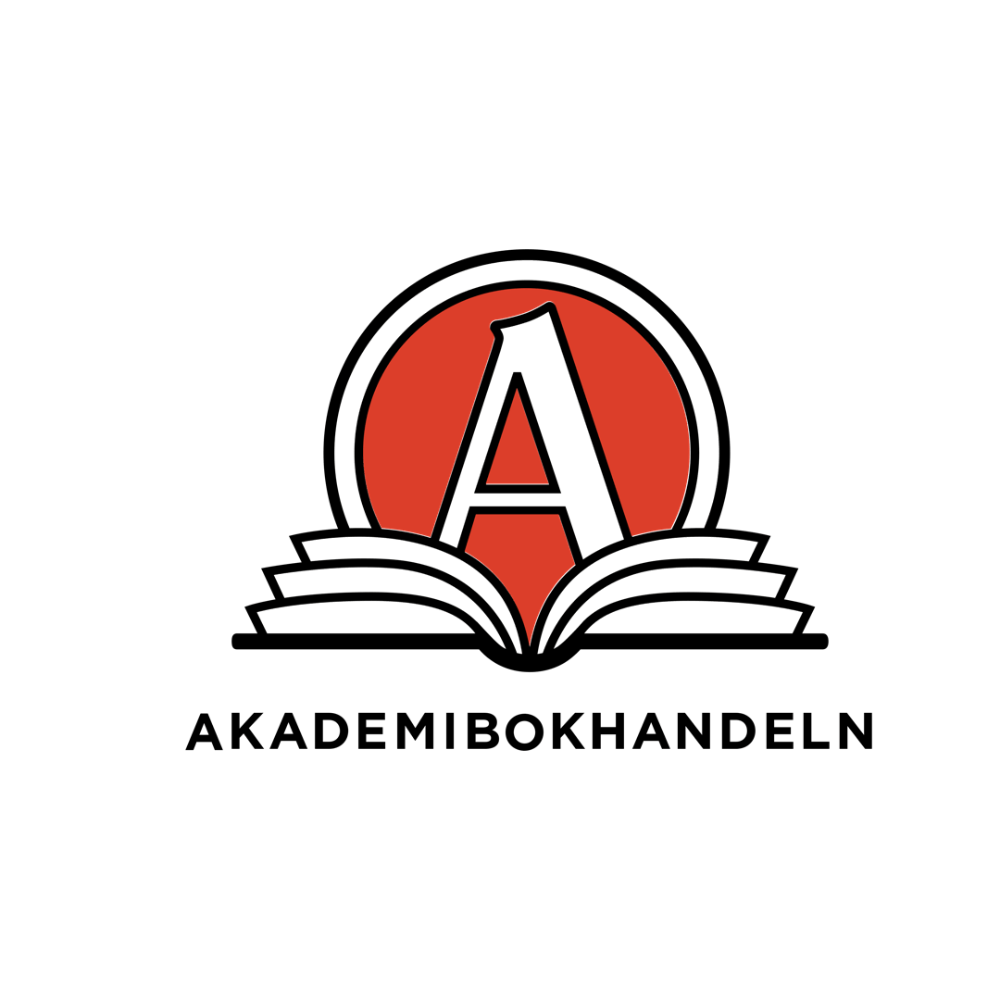
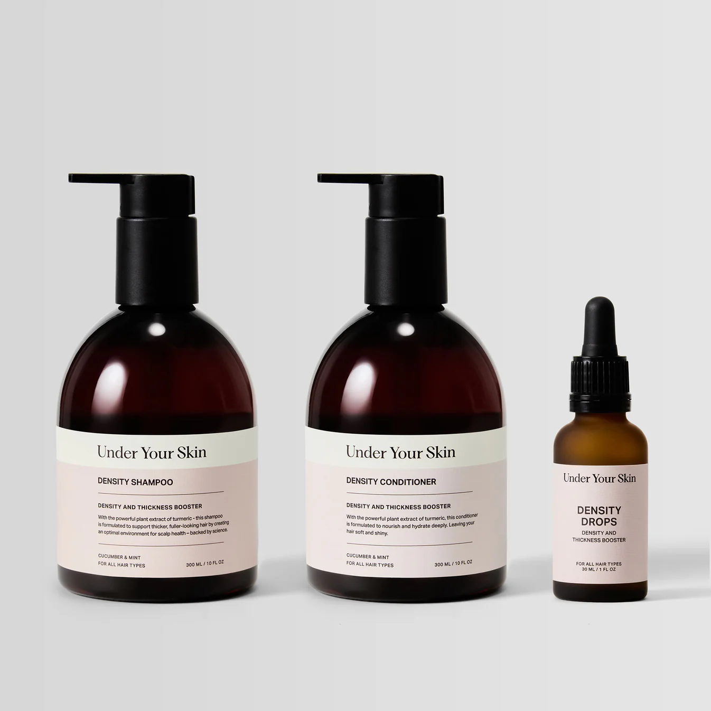
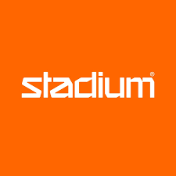

Case & företag jag jobbat med

Drypops (startup) – Meta Ads
- Tog fram annonskreativ och copy
- Identifierade målgrupper
- Satt upp och A/B-testade kampanjer i Meta Ads
- Analyserade och optimerade annonser
- Rapporterade resultat
Meta Ads
Capcut
Ads Manager
Copywriting
Canva
Läs mer

Akademibokhandeln – SoMe & SEO
- Analyserade webb- och SoMe-data
- Tog fram contentstrategi och SoMe-förslag
- Analyserade SEO och identifierade möjligheter
- Presenterade rekommendationer
Google Search Console
SEO
Ahrefs
GA4
Canva
Läs mer

Under Your Skin – CRO
- Analyserade användarbeteende (GA & Lucky Orange)
- Prioriterade CRO-hypoteser (PIE-modellen)
- Föreslog förbättringar för landningssidor
- Satt upp A/B-test i Pretento
GA4
Lucky Orange
Pretento
CRO
Canva
Läs mer

Stadium ⧸ CRM & CX
- Sätta upp workflows/kundresor
- Sätta upp automationer och triggers
- Identifiera rubbningar i kundupplevelsen
Voyado
CRM
Läs mer